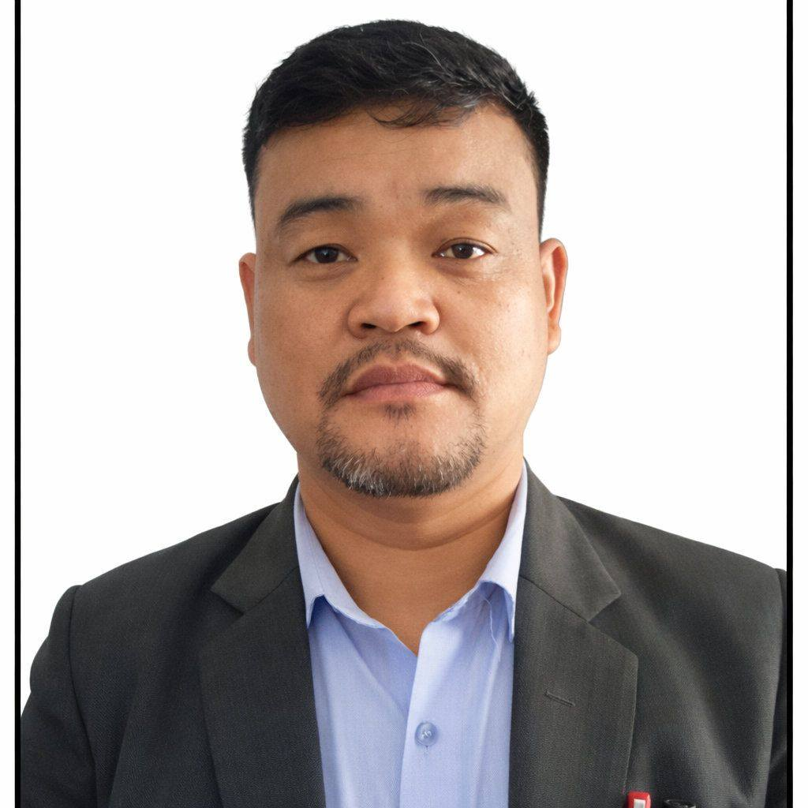

Who We Are
About Kankai Secondary School
Shree Kankai Secondary School is a community institution in Mai Nagarpalika-4, Danabari, Sitali, Ilam. Our school has 50+ years of experience in delivering quality education, strong character, and practical learning for future-ready students.
Our Story
Kankai Secondary School started with a clear vision: provide affordable, practical, and value-driven education to students of Ilam. Over the years, we have built a trusted learning environment where discipline, curiosity, and creativity grow together.
Along with regular academics, we focus on digital literacy, project work, public speaking, co-curricular activities, and life skills so students are ready for higher education and modern careers.
- Student-centered teaching with practical classroom methods.
- Strong support system for academic and personal development.
- Technology-focused streams to build job-ready capabilities.


Mission, Vision and Core Values
Every decision we take is guided by purpose, integrity, and service to students.
Our Mission
Deliver quality education that combines academic excellence, discipline, and practical skills so students can succeed with confidence in Nepal and beyond.
Our Vision
Become a leading community school that produces responsible, innovative, and employable graduates through modern, inclusive, and technology-rich education.
Our Core Values
Integrity: We do what is right even when no one is watching.
Respect: We value every learner, family, and team member.
Excellence: We push for continuous improvement every year.
What Makes Kankai Different?
A balanced learning model built for academic success and life readiness.
Experienced Teachers
Committed and trained faculty members who mentor students beyond textbooks.
Practical Learning
Lab work, project-based assignments, and skill-building sessions across subjects.
Technology Integration
Computer and digital tools are integrated into teaching and classroom delivery.
Supportive Culture
A safe and respectful school environment where every student can grow.
Co-Curricular Growth
Sports, cultural activities, and leadership programs for holistic development.
Parent Partnership
Regular communication with guardians to keep student progress on track.
Our Journey
Milestones that shaped our growth and impact in the community.
-
2017 B.S.
School Established
Founded in Sitali, Ilam with a commitment to community-focused quality education.
-
Growth Phase
Expanded Academic Capacity
Improved classrooms, added learning resources, and strengthened faculty development.
-
Technical Stream Launch
Computer Engineering (9-12)
Introduced technical education pathways to build practical and job-oriented skills.
-
Today
Future-Ready School Community
Focused on academic excellence, digital readiness, and character-building for every learner.

Message From the Vice Principal
Dear Students, Parents, and Guardians,
As Vice Principal, I am proud to serve Shree Kankai Secondary School and support a learning culture built on discipline, respect, and practical knowledge. We are committed to helping every student grow academically and personally.
Our focus is to provide quality teaching, technology-based learning, and strong guidance so students are ready for SEE, +2, and future careers. Together with teachers and families, we will continue to build confident, responsible, and skilled learners.
Become Part of the Kankai Family
Admissions and school visits are open. Connect with us to explore programs, facilities, and your child's future at Kankai Secondary School.